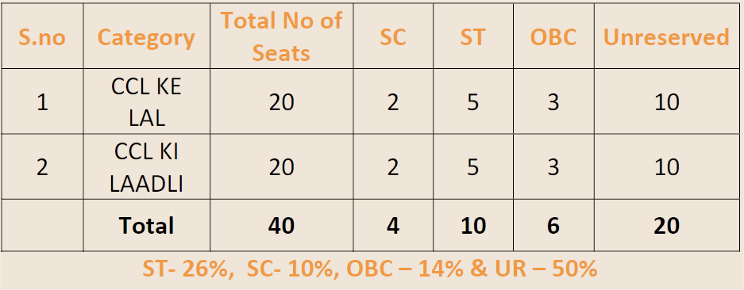

CCL KI LAAL-LAADLI
Selection Methodology
1. Online Filling of Forms : Application forms are to be filled online, through CCL KE
LAL LAADLI Registration portal.
2. Eligibility :
a. Only current Students passing Class Xth examination in 2022 with Minimum 50% are eligible to appear in Entrance Exam.
b. Geographical Domain: Applicants[self/Parent(s)] should be resident of Command Area of CCL i.e. within 25Km of CCL establishments (Mine/ office/others).
c. Income limit: Candidates with annual family income less than or equal to that for EWS (i.e. not exceeding Rs. 8.00 Lakhs per Annum)..
3. Examination: Offline entrance examinations will be held via center based OMR test.
4. Merit List : Provisional merit list will be prepared based on the marks obtained in CCL Ke LAL LAADLI entrance examination. Marks obtained in Xth board is only of qualifying nature and has no weightage in merit list.
5. Document verification : Students selected provisionally, will be called for documents verification.
Number of Seats

Detailed Examination Syllabus
1. General Aptitude & Reasoning.
2. Physics : Motion, Force, Work, Energy and Power, Gravitation, Electric Current , Magnetic effects of electric current, Reflections & Refractions of light, Human Eye and its defects, Optical instruments.
3. Chemistry : Mole concept, Structure of atoms, States of matter, Chemical reactions, Sources of energy, Carbon compounds, Periodic classification of elements, Acids, bases and salts, Metals and Non Metals.
4. Mathematics: Basic Mathematics, Real Numbers, Polynomials, Pair of Linear equation in Two Variables, Triangles, Trigonometry & Trigonometric identities, Statistics, Quadratic equations, Arithmetic Progressions, Circles, Heights and Distances, Probability, Lines, Surface Areas and volumes.
STAY ALERT
BEWARE OF FRAUD MONEY WILL NOT BE ASKED FROM YOU [SELF/PARENTS] , AT ANY POINT OF TIME .
FOR ANY OTHER INFORMATION PLEASE REFER TO : HTTPS://WWW.CENTRALCOALFIELDS.IN/